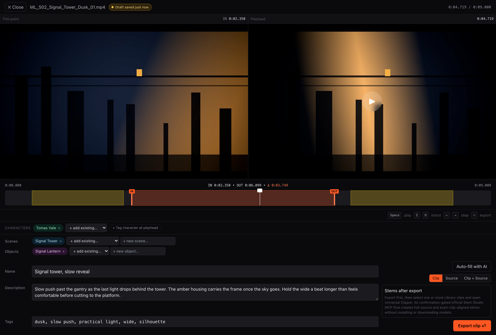
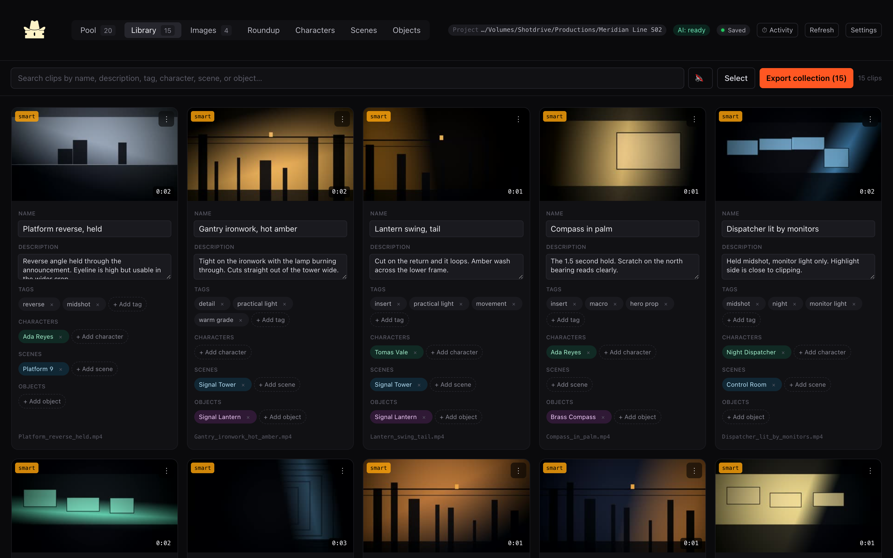

01 Ingest coverage
See the batch as footage, not files.
Pool brings source generations together for review. Keep the whole batch visible while you choose what deserves a second look.

Clipper Cowboy • Local post-production tool
Clipper Cowboy is the local shot library for creators building an IP. Save the takes that work, tag who and what is in them, and pull the exact coverage your next edit needs.
The problem
Where the footage piles up
Generated footage arrives faster than anyone can log it. The usable material ends up scattered across batches, dated folders, and half-remembered prompts. Clipper Cowboy turns that pile into selects you can come back to the next time a character, scene, or object needs another shot.
The workflow
01 Ingest coverage
Pool brings source generations together for review. Keep the whole batch visible while you choose what deserves a second look.
02 Make selects
Set the in and out points on the frame you mean. Name the clip, then tag the character, scene, and object in it so it turns up when you go looking.

03 Build the library
Every select you save is filed by character, scene, object, and your own tags. When you sit down to cut a trailer, a social edit, or the next episode, you start from a list of shots you already know are good instead of scrubbing raw generations again.
Clipper Cowboy runs on your machine. AI organization is optional and off until you ask for it. The catalog lives in your project folder, so it travels with the work.

Runs on your machine
Frame-accurate selects
Tag characters, scenes, objects
Premiere-ready exports
Open source, on your machine
Clone the repo, point Clipper Cowboy at a project folder, and start saving selects. It is MIT licensed, so the catalog and the tool are both yours.
git clone https://github.com/princezoho/clipper-cowboy.git
cd clipper-cowboy
npm run setup
npm run devRuns offlineNo account to createNothing uploaded without askingAgent ready (MCP)Contributions welcome